Коза-дереза
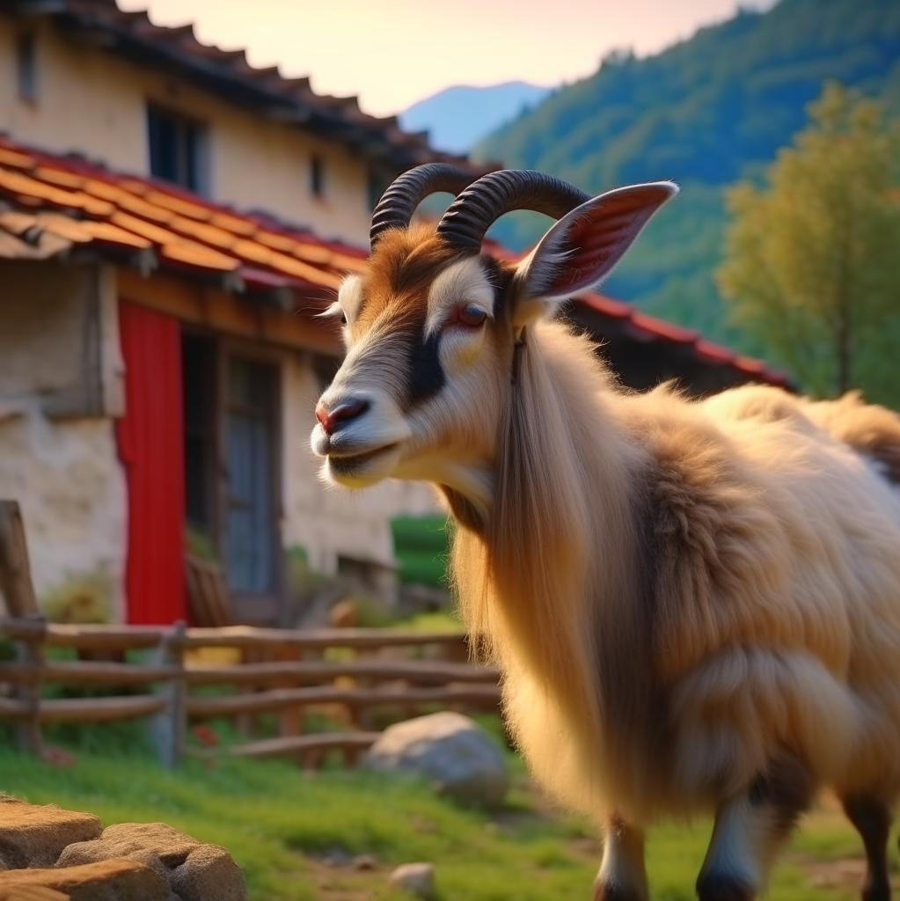
Жили были дед да баба да внученька Маша. Не было у них ни коровки, ни свинки, никакой скотинки — одна коза. Коза, черные глаза, кривая нога, острые рога. Дед эту козу очень любил. Вот раз дед послал бабку козу пасти. Она пасла, пасла и домой погнала.
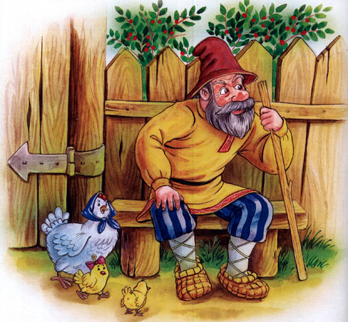
А дед сел у ворот да и спрашивает:
— Коза моя, коза, чёрные глаза, кривая нога, острые рога, что ты ела, что пила?
— Я не ела, не пила, меня бабка не пасла. Как бежала через мосточек ухватила кленовый листочек, — вот и вся моя еда.
Рассердился дед на бабку, раскричался и послал внучку козу пасти.
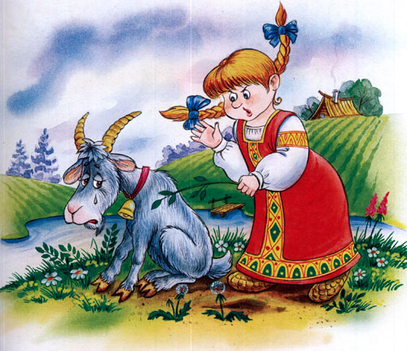
Та пасла, пасла и домой пригнала. А дед у ворот сидит и спрашивает:
— Коза моя, коза, чёрные глаза, кривая нога? острые рога, что ты ела, что пила? А коза в ответ:
— Я не ела, я не пила, меня внучка не пасла, как бежала через мосточек, ухватила кленовый листочек, — вот и вся моя еда.
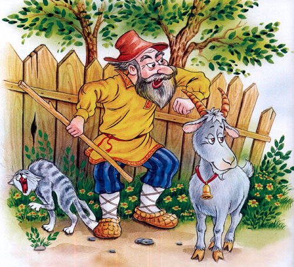
Рассердился дед на внучку, раскричался, пошёл сам козу пасти.
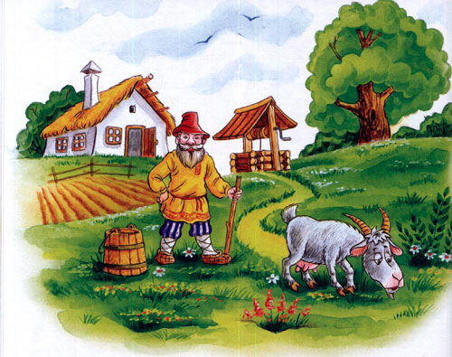
Пас, пас, досыта накормил и домой погнал. А сам вперёд побежал, сел у ворот да спрашивает:
— Коза моя , коза, чёрные глаза, кривая нога, острые рога, хорошо ли ела, хорошо ли пила?
А коза говорит:
— Я не пила, я не ела, а как бежала через мосточек ухватила кленовый листочек,- вот и вся моя еда!
Рассердился тут дед на обманщицу, схватил ремень, давай её по бокам лупить.
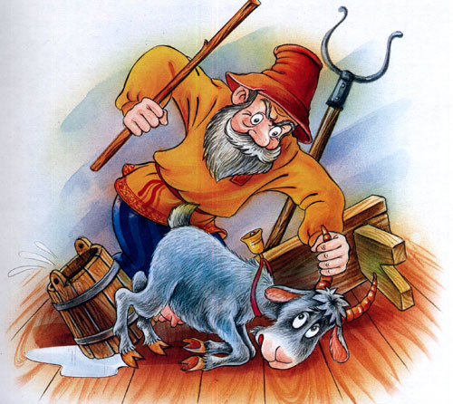
Еле-еле коза вырвалась и побежала в лес.
В лес прибежала да и забралась в зайкину избушку, двери заперла, на печку залезла. А зайка в огороде капусту ел. Пришёл зайка домой — дверь заперта.
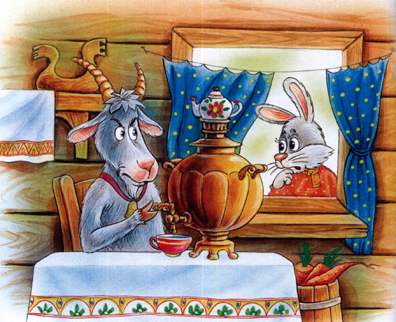
Постучал зайка да и говорит:
— Кто мою избушку занимает, кто меня в дом не пускает?
А коза ему отвечает:
— Я коза-дереза пол бока луплена, за три гроша куплена, я как топну — топну ногами, заколю тебя рогами, хвостом замету.
Испугался зайчик, бросился бежать. Спрятался под кустик и плачет, лапкой слёзы вытирает.
Идет мимо серый волк, зубами щёлк.
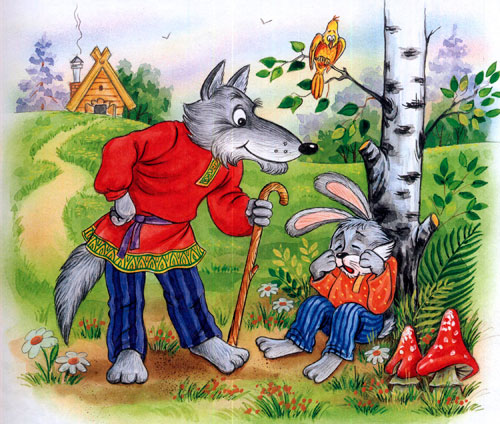
-О чём ты заинька плачешь, о чём слёзы льёшь?
— Как мне, заиньке, не плакать, как мне серому, не горевать: построил я себе избушку на лесной опушке, а забралась в неё коза-дереза, меня домой не пускает.
— Не горюй, заинька, не горюй серенький, пойдём я её выгоню.
Подошёл серый волк к избушке да как закричит:
— Ступай, коза, с печи, освобождай зайкину избушку!
А коза ему и отвечает:
— Я коза-дереза, пол бока луплена, за три гроша куплена, как выпрыгну, как выскочу, забью ногами, заколю рогами — пойдут клочки по закоулочкам!
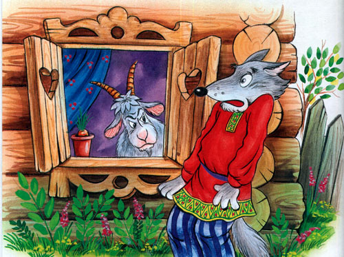
Испугался волк и убежал!
Сидит заинька под кустом, плачет, слезы лапкой утирает. Идёт медведь, толстая нога. Кругом деревья, кусты трещат.
— О чём, заинька, плачешь, о чём слёзы льёшь?
— Как мне, заиньке, не плакать, как мне серому, не горевать: построил я избушку на лесной опушке, а забралась ко мне коза-дереза, меня домой не пускает.
— Не горюй, заинька, я её выгоню.
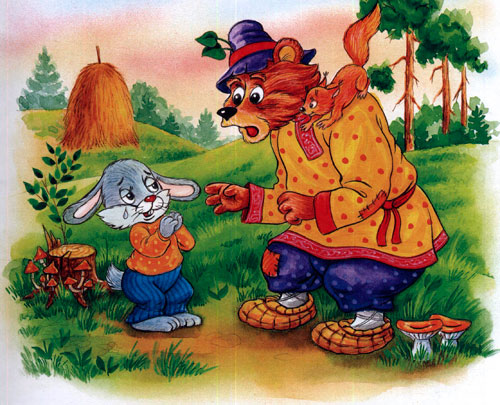
Пошёл к избушке медведь да давай реветь:
— Пошла, коза, с печи, освобождай зайкину избушку!
Коза ему в ответ:
— Как выскочу, да как выпрыгну, как забью ногами, заколю рогами, — пойдут клочки по закоулочкам!
Испугался медведь и убежал.
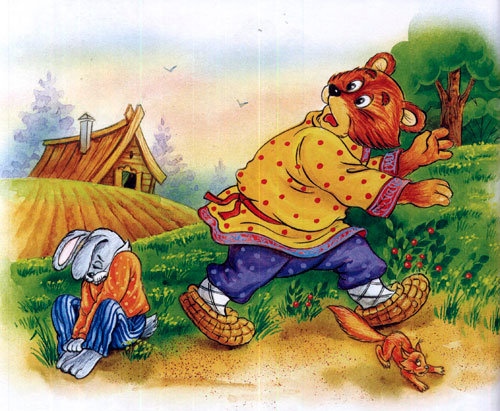
Сидит зайка под кустом, пуще прежнего плачет, слёзки лапкой утирает. Кто мне зайчику серенькому поможет? Как мне козу-дерезу выгнать?
Идёт петушок, красный гребешок, в красных сапогах, на ногах шпоры, на плече коса.
— Что ты, заинька, так горько плачешь, что ты серенький, слёзы льёшь?
— Как мне не плакать, как не горевать, построил я избушку, на лесной опушке, забралась туда коза-дереза меня домой не пускает.
— Не горюй, заинька, я её выгоню.
— Я гнал — не выгнал, волк гнал — не выгнал, медведь гнал — не выгнал, где тебе,
Петя, выгнать!
— Пойдём посмотрим, может и выгонем!
Пришёл Петя к избушке да как закричит:
— Иду, иду скоро, на ногах шпоры, несу острую косу, козе голову снесу! Ку-ка-ре-ку!
Испугалась коза да как хлопнется с печи! С печи на стол, со стола на пол, да в дверь, да в лес бегом! Только её и видели.
А заинька снова стал жить в своей избушке, на лесной опушке. Морковку жуёт, вам поклон шлёт.